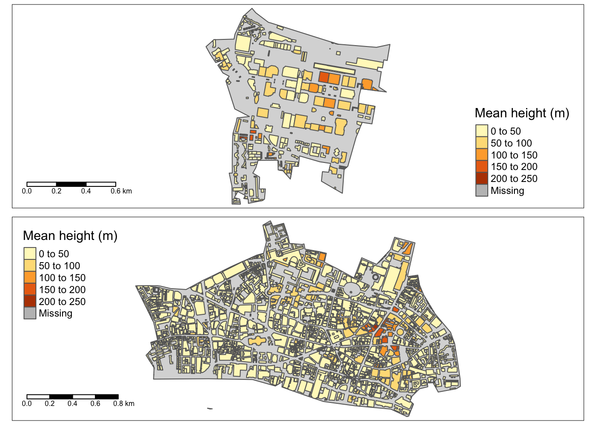
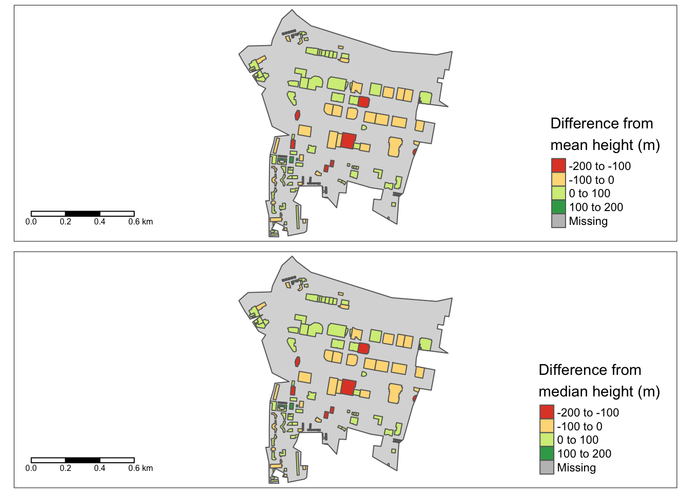
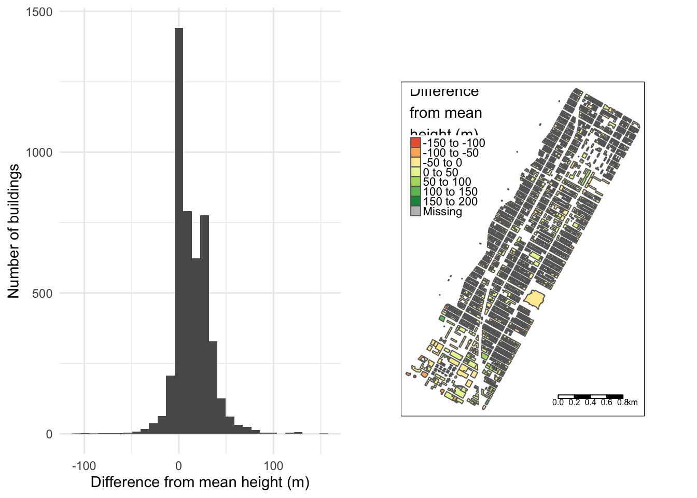

st_as_raster <- function(rstars){
rext <- st_bbox(rstars)
raster(t(rstars[[1]]), xmn = rext[1], xmx = rext[3],
ymn = rext[2], ymx=rext[4],
crs = st_crs(rstars)$proj4string)
}Raster heights to building heights
data science
urban
london
new york city
buildings
raster
In the previous post, we discussed the utility of retrieving a summarised height data from the overlaid raster cells of a particular building polygon. In this post, I look at a quick method do this using the package exactextractr [1]. While typically used in the calculation of zonal statistics, it can also be applied to deriving features from raster layers for building polygons.
Since I use stars to read and process raster data, I have an additional step before running the extraction function - converting the stars object to a raster with a st_as_raster() convenience function [2].
The exact_extract() function assigns mean, median, minimum etc. values from the raster layer to the polygons. The full set of summary operations can be seen here. I’ve opted for mean and median as summary statistics. At first glance it appears that areas with tall buildings are being capture well e.g. around Liverpool Street station (e.g. the Shard) on the eastern part of City of London and the tall buildings in Canary Wharf.

However, validation tells another story. Since only a small portion of buildings have height values in OpenStreetMap, I’ve used a conversion factor of 3 for deriving heights from building levels to increase the sample size for validation. The sample size is still small but considerably larger with building heights alone. The differences between raster-summarised heights and actual heights are very high in the Canary Wharf cluster - and there are good reasons for this.
- The grid is 90m but building footprints are typically 20m - 40m.
- Very tall buildings are often surrounded by much smaller buildings or parks making the polygon cell mean and median much lower.
- Depending on the coverage of the raster cell, the height of the very tall building can be associated with a significantly smaller neighbour and vice versa.

For a robust conclusion of the utility of 90m raster heights for building level features, validation needs to be done across a larger area using more buildings with height values. I’ve picked the whole of the Upper West Side in New York City since 93% of building polygons in the area have non-null heights in OpenStreetMap. Note, I’m assuming OpenStreetMap heights are ground truth (which may not be the case?).
The distribution of absolute difference in mean building height from the raster data and the actual heights in OpenStreetMap looks symmetric but strongly biased to summarised raster heights being larger.

For a more succinct summary, I’ve split the OpenStreetMap building height into quantiles with a mean height per quantile. The table shows raster summaries from a 90m grid resolution over-estimate for every quantile - with buildings in the 25-75 percentile bands being over-estimated by almost 100%.
| Percentile | Mean height in percentile (m) | Mean height difference (m) |
|---|---|---|
| 25% | 13.63958 | 22.4 |
| 50% | 17.71011 | 14.0 |
| 75% | 19.37925 | 14.0 |
| 100% | 41.70860 | 3.4 |
In summary, the 90m grid is not a viable data source for accurate building level information. Since the availability of building height information is very poor for the developing world, satellite-derived values are the only way forward. My plan is to look at lower granularity data - starting with 10m grid data for Germany [3] that I will validate with EUBUCCO [4]. If this lower granularity works well, I have a big project coming up - applying the approach of Franz et al. [5] to satellite data from Mumbai!
References
[1]
“Fast extraction from raster datasets using polygons.” https://isciences.gitlab.io/exactextractr/ (accessed Mar. 28, 2023).
[2]
“Convert stars raster to raster::raster. Gist.” https://gist.github.com/cbrown5/65ac150cb71de8cc6c7923313a2b72f5 (accessed Mar. 28, 2023).
[3]
D. Frantz et al., “Building height map of germany.” Zenodo, Oct. 05, 2020. doi: 10.5281/zenodo.4066295.
[4]
N. Milojevic-Dupont et al., “EUBUCCO.” Zenodo, Oct. 20, 2022. doi: 10.5281/ZENODO.6524780.
[5]
D. Frantz et al., “National-scale mapping of building height using sentinel-1 and sentinel-2 time series,” Remote Sensing of Environment, vol. 252, p. 112128, Jan. 2021, doi: 10.1016/j.rse.2020.112128.
Credits
Post photo by Simone Hutsch on Unsplash